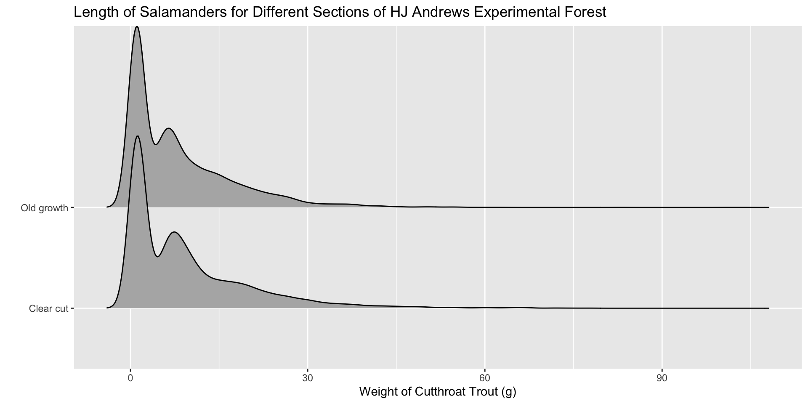
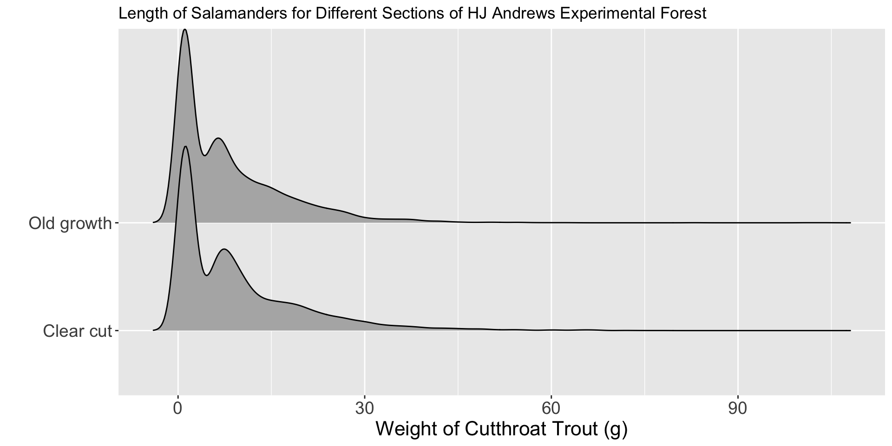

| year | sitecode | section | reach | pass | unitnum | unittype | vert_index | pitnumber | species | length_1_mm | length_2_mm | weight_g | clip | sampledate | notes |
|---|---|---|---|---|---|---|---|---|---|---|---|---|---|---|---|
| 2013 | MACKOG-U | OG | U | 1 | 14 | P | 1 | NA | Cascade torrent salamander | 41 | 71 | NA | NONE | 2013-09-06 | NA |
| 2017 | MACKCC-L | CC | L | 1 | 2 | SC | 29 | NA | Cascade torrent salamander | 39 | 67 | 1.3 | NONE | 2017-09-05 | NA |
| 1995 | MACKCC-L | CC | L | 1 | 1 | P | 12 | NA | Coastal giant salamander | 67 | 114 | 11.1 | NONE | 1995-08-30 | NA |
| 2003 | MACKCC-U | CC | U | 1 | 9 | C | 63 | NA | Coastal giant salamander | 85 | 151 | NA | NONE | 2003-09-02 | ADULT |
| 1998 | MACKOG-M | OG | M | 1 | 5 | C | 2 | NA | Cutthroat trout | 121 | NA | NA | LV | 1998-09-02 | NA |
| 2007 | MACKOG-U | OG | U | 1 | 13 | C | 74 | NA | Cutthroat trout | 45 | NA | NA | NONE | 2007-09-13 | NA |
| 1990 | MACKCC-L | CC | L | 1 | 3 | SC | 1 | NA | NA | NA | NA | NA | NONE | 1990-08-15 | not sampled |
| 1995 | MACKOG-M | OG | M | 1 | 10 | S | 1 | NA | NA | NA | NA | NA | NONE | 1995-08-29 | JAM |
Week 3 Day 2
STAT 313
Lab 1 Revisions Due Friday
Ethical Considerations with Categorical Variables
Choosing What to Measure - Gender
Keller et al. (2017) designed a study to examine whether a community-based suicide prevention project could increase willingness to seek professional help for suicidal ideation among eastern Montana youth.
. . .
Students attending the Let’s Talk theater workshop, were asked to report their gender, race, and age.
Choosing What to Measure - Gender
Researchers provided students with the following question:
What is your gender?
Male, Female, Other
. . .
What information are the researchers missing?
. . .
Why is that information important?
Choosing What to Measure - Sex
\(\beta\) blockers have been shown to improve survival in patients with congestive heart failure. These medicines block the effects of the hormone epinephrine (adrenaline). Research suggests that beta blockers have a differing effect for individuals with high levels of estrogen (Khan and Movahed 2000).
Choosing What to Measure - Sex
The intake form for a local heart clinic asks the following question:
What is sex were you assigned at birth?
Male, Female, Other
. . .
What information are the doctors missing?
. . .
Why is that information important?
Choosing What to Measure - Race
Every year, the US publishes a large dataset on the public birth records for babies born that year. These data contain information about the baby, the pregnancy, and the birth parent(s).
Choosing What to Measure - Race
Looking at the births14 dataset, the race of the mother was classified as:
- white
- nonwhite
. . .
What information is missing?
. . .
Why is that information important?
Lab 3
Today’s Data
The
and_vertebratesdataset contains length and weight observations for Coastal Cutthroat Trout and two salamander species (Coastal Giant Salamander, and Cascade Torrent Salamander) in previously clear cut (c. 1963) and old growth coniferous forest sections of Mack Creek in HJ Andrews Experimental Forest, Willamette National Forest, Oregon.

Research Question
Are there differences in fish biomass between clear cut and old growth sections of the HJ Andrews Forest?
. . .
Clear Cutting
In the 1950s and 60s researchers clear cut sections of the HJ Andrews forest to research the efficiency of forest operations, including logging, road building, and forest regeneration.
Data Layout
. . .
What are the observations / rows in this dataset?
If you wanted to find the mean mass for Cutthroat trout in each section, what would you do?
Step 1: Remove Salamanders
trout <- filter(and_vertebrates,
species == "Cutthroat trout") Step 2: group_by() + summarize()
trout %>%
group_by(section) %>%
summarize(
mean_mass = mean(weight_g,
na.rm = TRUE)
)# A tibble: 2 × 2
section mean_mass
<chr> <dbl>
1 Clear cut 9.38
2 Old growth 8.21. . .
Remember na.rm = TRUE is important if there are missing values!
Are they different?
| Forest Section | Mean Biomass |
|---|---|
| Clear cut | 9.380571 |
| Old growth | 8.213796 |
Would you conclude there is a difference in fish biomass between clear cut and old growth sections of the HJ Andrews Forest?
Let’s Make a Visualization!
ggplot(data = trout,
mapping = aes(x = weight_g,
y = section)
) +
geom_density_ridges() +
labs(x = "Weight of Cutthroat Trout (g)",
y = "",
title = "Length of Salamanders for Different Sections of HJ Andrews Experimental Forest") 
Are they different?

Would you conclude there is a difference in fish biomass between clear cut and old growth sections of the HJ Andrews Forest?
Let’s Add in the Type of Channel
The channels (unittype) of the Mack Creek which were sampled were classified into the following groups:
"C"
"I"
"IP"
"P"
"R"
"S"
"SC"
NA
cascade
riffle
isolated pool
pool
rapid
step (small falls)
side channel
not sampled by unit
If you wanted to find the mean mass for Cutthroat trout for each type of channel in each section, what would you do?
group_by() Multiple Variables
trout %>%
group_by(section, unittype) %>%
summarize(
mean_mass = mean(weight_g,
na.rm = TRUE)
)# A tibble: 13 × 3
# Groups: section [2]
section unittype mean_mass
<chr> <chr> <dbl>
1 Clear cut C 8.47
2 Clear cut P 13.4
3 Clear cut R 8.06
4 Clear cut S 4.34
5 Clear cut SC 4.80
6 Clear cut <NA> 16.3
7 Old growth C 7.58
8 Old growth I 9.81
9 Old growth IP 1.39
10 Old growth P 10.4
11 Old growth R 6.66
12 Old growth SC 5.38
13 Old growth <NA> 13.4 Visualization 2.0 – Incorporating Color
ggplot(data = trout,
mapping = aes(x = weight_g,
fill = section,
y = unittype)
) +
geom_density_ridges(alpha = 0.5) +
labs(x = "Weight of Cutthroat Trout (g)",
fill = "Section of HJ Andrews \nExperimental Forest",
y = "Type of Channel")
Visualization 2.0 – Incorporating Color

Why put unittype on the y-axis instead of section???
Visualization 2.0 – Incorporating Facets
ggplot(data = trout,
mapping = aes(x = weight_g,
y = unittype)) +
geom_density_ridges() +
labs(x = "Weight of Cutthroat Trout (g)",
y = "Section of HJ Andrews Experimental Forest") +
facet_wrap(~section)
Lab 3
Accessing Lab 3
Roles
The person who was not the Recorder last week acts as the Recorder this week (change roles!).
. . .
Step 2: The Recorder follows these instructions to copy the Lab 2 project into your group’s workspace
. . .
Step 3: Both members open the Lab 3 assignment in your group workspace!
. . .
Step 4: Follow the final instructions to activate collaborative editing in the document.
References
Keller, Sarah N., and Timothy Wilkinson. 2017. “Preventing Suicide in Montana: A Community-Based Theatre Intervention.” Journal of Social Marketing 7 (4): 423–40. https://doi.org/10.1108/jsocm-12-2016-0086.
Khan, Nazim Uddin Azam, and Assad Movahed. 2000. “Role of ß Blockers in Congestive Heart Failure.” Congestive Heart Failure 6 (6): 299–312. https://doi.org/10.1111/j.1527-5299.2000.80176.x.